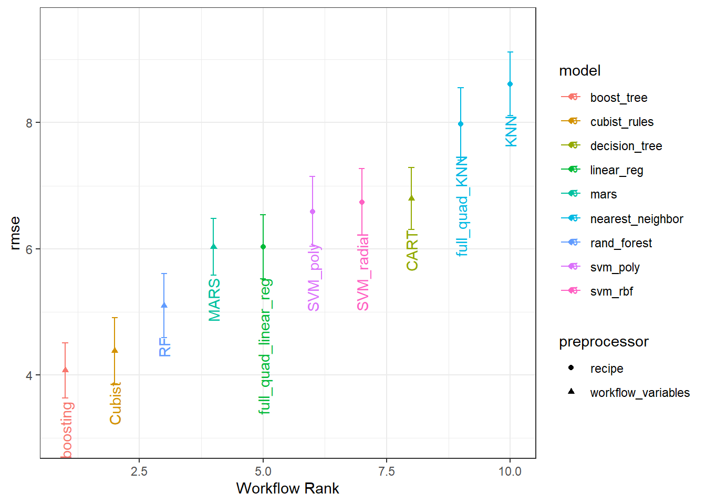
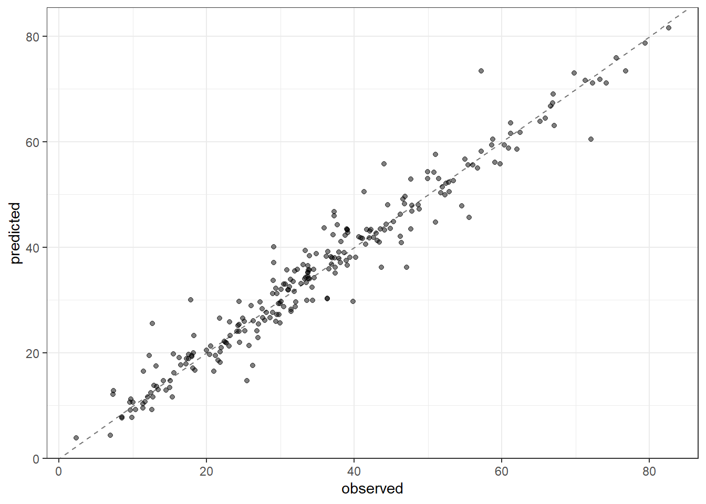

3 Model performance
Here is an example constructed from sample data, training 12 different ML models.

A quick overview, obtained from a node in the pipeline.
And to check if the predictions are close to the actual observations, we inspect another node from the pipeline.

Looks good. What is the error metric associated with this?
targets::tar_read(metrics)
#> # A tibble: 2 x 4
#> .metric .estimator .estimate .config
#> <chr> <chr> <dbl> <chr>
#> 1 rmse standard 3.72 Preprocessor1_Model1
#> 2 rsq standard 0.949 Preprocessor1_Model1That is the benefit of making your own package.
- Simply run ML::results to get the best performing model straight into your R session
- Look at the documentation by running ?results.